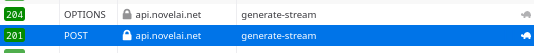
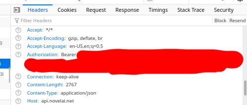

Finding your NAI API key
To get a NovelAI API key, follow these instructions:
1. Login to NovelAI through the website.2. Create a new story, or open an existing story.
3. Open the Network Tools on your web browser. (For Chrome or Firefox, you do this by pressing Ctrl+Shift+I, then switching to the Network tab.)
4. Generate something. You should see two requests to api.novelai.net/ai/generate-stream, which might look something like this: 
5. Select the second request, then in the Headers tab of the inspection panel, scroll down to the very bottom. Look for a header called Authorization:

The long string (after "Bearer", not including it) is your API key.
*Proxies and Cloudflare-type services may interfere with connection